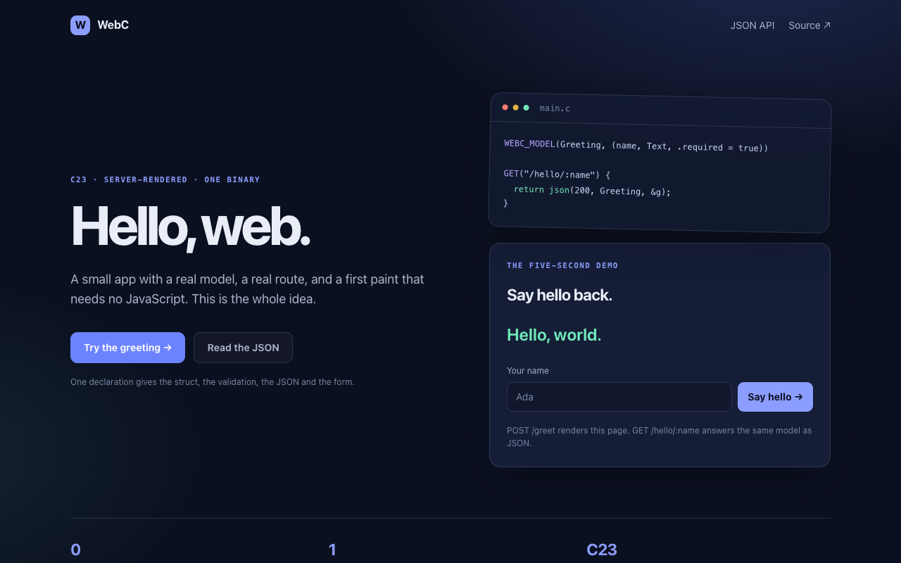

Hello
A finished first page: a greeting form, a JSON endpoint, and one shared model.

examples/hello — screenshot taken from webc dev.webc.json
{
"name": "hello",
"version": "0.1.0",
"server": ["src/server.c"],
"shared": ["src/view.c"],
"client": ["src/client.c"],
"port": 8080,
"boot": {
"title": "hello — WebC",
"css": ["/public/style.css"],
"el": "#root",
"data": "/api/greeting",
"inline": true,
"hydrate": true
}
}src/app.h
// hello — the shared half: one model, one view prototype, one interaction state.
// `state()` in a shared header is the same declaration on both halves: SSR draws
// the initial value, the browser owns the writes.
#pragma once
#include <webc/shared.h>
WEBC_MODEL(Greeting, (name, Text, .required = true),
(greeting, Text))
// A request/response shape, not a table: no database, no migration to drift.
WEBC_MODEL_INTERNAL(Greeting)
declare_view(Home, Greeting);
state(bool, try_pulse, false);src/client.c
// hello — the browser half: the one interaction the page adds. A named link, a
// bound action, a signal for the shake, and the framework's timer. The form
// stays a real POST; no-JavaScript is the whole no-JS app.
#include <webc/web.h>
#include <webc/host.h>
#include "app.h"
static Greeting C;
static void clear_pulse(WJs r) {
(void)r;
set(try_pulse, false);
}
action(try_greeting) {
set(try_pulse, true);
reveal_hook("try"); // after the batch, when the card is where it should be
focus_hook("name"); // the field, by its id — the reader can type immediately
webc_later(1800, clear_pulse);
}
void wc_app_data(str json) {
// The page carries the model it was rendered against (webc_seed, boot.inline):
// decode it once, and a POST's answer survives hydration unchanged.
JParse p = json_parse(wc_arena_get(), json);
if (p.ok && p.v) model_read_json_val(wc_arena_get(), Greeting_modelof(), p.v, &C);
}
client_main {
bind("try-link", "click", try_greeting);
mount(Home, &C, "#root");
return 0;
}src/server.c
// hello — the server half: the routes, and nothing else. No main(), no middleware
// list, no arena: the framework boots and applies its defaults.
#include <webc/server.h>
#include "app.h"
GET("/") {
// The first paint already has an answer: an example should never open blank.
return page(Home, &(Greeting){.greeting = "Hello, world."});
}
GET("/hello/:name") {
Greeting g = {.name = path("name")};
g.greeting = fmt("Hello, %s.", g.name);
return json(200, Greeting, &g);
}
POST("/greet") {
Greeting g = body(Greeting);
g.greeting = fmt("Hello, %s.", g.name);
return page(Home, &g);
}
GET("/health") {
return res_text(200, "ok");
}
GET("/api/greeting") {
return json(200, Greeting, &(Greeting){.greeting = "Hello, world."});
}
// The page's own seed: the model this response was rendered against, embedded
// inline so the browser half cannot disagree with it (and no fetch lands late).
str webc_seed(Arena *a) {
Greeting g = {.greeting = "Hello, world."};
Request *r = webc_req_current();
if (r && str_eq_c(r->path, "/greet")) {
g = body(Greeting);
g.greeting = fmt("Hello, %s.", g.name);
}
return model_to_json(a, Greeting_modelof(), &g);
}src/view.c
// hello's view: markup only, compiled for the server and the browser. The link
// names itself; the client half says what that name does. The shake is a signal
// with a live class binding, so the card never needs a script of its own.
#include "app.h"
// The page is a value: the same view serves the first paint and the form's
// answer. A view takes its context by name, so a route reads like prose.
view(Home, Greeting *g) {
el("div") { class_("shell");
el("header") { class_("topbar");
el("a") { class_("brand"); href("/");
el("span") { class_("brand-mark"); text("W"); }
text("WebC");
}
el("nav") { class_("topnav"); attr("aria-label", "Example links");
el("a") { href("/hello/world"); text("JSON API"); }
el("a") { href("https://github.com/bumasoft/WebC"); text("Source ↗"); }
}
}
el("main") { class_("hero");
el("section") { class_("intro");
el("p") { class_("eyebrow"); text("C23 · SERVER-RENDERED · ONE BINARY"); }
el("h1") { text("Hello, web."); }
el("p") { class_("lede");
text("A small app with a real model, a real route, and a first paint "
"that needs no JavaScript. This is the whole idea.");
}
el("div") { class_("actions");
el("a") { class_("button primary"); named("try-link"); href("#try"); text("Try the greeting →"); }
el("a") { class_("button quiet"); href("/hello/world"); text("Read the JSON"); }
}
el("p") { class_("fineprint");
text("One declaration gives the struct, the validation, the JSON and the form.");
}
}
el("section") { class_("showcase"); attr("aria-label", "The app in one screen");
el("div") { class_("code-card");
el("div") { class_("card-bar");
el("span") { class_("dot red"); }
el("span") { class_("dot amber"); }
el("span") { class_("dot green"); }
el("span") { class_("filename"); text("main.c"); }
}
el("pre") { class_("code"); attr("aria-label", "A WebC route");
el("code") {
el("span") { class_("kw"); text("WEBC_MODEL"); }
text("(Greeting, (name, Text, .required = true))\n\n");
el("span") { class_("kw"); text("GET"); }
text("(\"/hello/:name\") {\n");
el("span") { class_("fn"); text(" return json"); }
text("(200, Greeting, &g);\n}\n");
}
}
}
el("div") { class_(get(try_pulse) ? "greeting-card shake" : "greeting-card"); id_("try");
el("p") { class_("card-kicker"); text("THE FIVE-SECOND DEMO"); }
el("h2") { text("Say hello back."); }
if (g->greeting && *g->greeting) {
el("p") { class_("greeting"); attr("role", "status"); text("%s", g->greeting); }
} else {
el("p") { class_("muted"); text("Give the model a name. It answers in HTML and JSON."); }
}
el("form") { post_to("/greet");
el("label") { attr("for", "name"); text("Your name"); }
el("div") { class_("form-row");
el("input") {
id_("name"); name("name"); placeholder("Ada");
attr("autocomplete", "off"); required();
if (g->name && *g->name) value_(g->name);
}
el("button") { type_("submit"); text("Say hello →"); }
}
}
el("p") { class_("fineprint");
text("POST /greet renders this page. GET /hello/:name answers the same model as JSON.");
}
}
}
}
el("section") { class_("proof"); attr("aria-label", "What this app proves");
el("div") { class_("proof-item");
el("strong") { text("0"); }
el("span") { text("lines of JavaScript required"); }
}
el("div") { class_("proof-item");
el("strong") { text("1"); }
el("span") { text("model, shared by the page and the API"); }
}
el("div") { class_("proof-item");
el("strong") { text("C23"); }
el("span") { text("from the route to the rendered document"); }
}
}
el("footer") { class_("footer");
el("span") { text("A WebC example · deliberately small, deliberately finished."); }
el("a") { href("/health"); text("Health check ↗"); }
}
}
}public/style.css
/* hello: a dark, quiet first page. Every colour is a token here; the view owns no
styling decisions beyond class names. */
:root {
--bg: #0b1020;
--panel: rgba(19, 27, 51, 0.78);
--panel-strong: #151d37;
--text: #e8edf7;
--muted: #a8b4ca;
--faint: #7886a1;
--line: rgba(168, 180, 202, 0.18);
--accent: #8b9dff;
--accent-strong: #6c83ff;
--green: #6ee7b7;
--mono: ui-monospace, SFMono-Regular, Menlo, Consolas, monospace;
}
* { box-sizing: border-box; }
html { min-width: 320px; }
body {
margin: 0;
min-height: 100vh;
color: var(--text);
background:
radial-gradient(900px 520px at 85% -10%, rgba(108, 131, 255, 0.22), transparent 62%),
radial-gradient(700px 420px at -10% 70%, rgba(110, 231, 183, 0.10), transparent 60%),
var(--bg);
font: 16px/1.6 system-ui, -apple-system, BlinkMacSystemFont, "Segoe UI", sans-serif;
-webkit-font-smoothing: antialiased;
}
a { color: inherit; text-decoration: none; }
a:focus-visible, input:focus-visible, button:focus-visible {
outline: 2px solid var(--accent);
outline-offset: 3px;
}
.shell { width: min(1080px, calc(100% - 48px)); margin: 0 auto; padding: 22px 0 28px; }
.topbar { display: flex; align-items: center; justify-content: space-between; gap: 20px; }
.brand { display: inline-flex; align-items: center; gap: 10px; font-weight: 720; letter-spacing: -0.02em; }
.brand-mark {
display: grid; place-items: center; width: 28px; height: 28px;
border-radius: 9px; background: var(--accent); color: var(--bg); font-weight: 800;
}
.topnav { display: flex; gap: 20px; color: var(--muted); font-size: 14px; }
.topnav a:hover, .footer a:hover { color: var(--text); }
.hero {
display: grid; grid-template-columns: minmax(0, 1fr) minmax(330px, 0.9fr);
gap: 56px; align-items: center; padding: 86px 0 72px;
}
.eyebrow, .card-kicker {
margin: 0 0 16px; color: var(--accent); font: 600 11px/1.4 var(--mono);
letter-spacing: 0.12em;
}
h1 { margin: 0; font-size: clamp(48px, 7vw, 78px); line-height: 1.02; letter-spacing: -0.055em; font-weight: 760; }
.lede { max-width: 46ch; margin: 24px 0 0; color: var(--muted); font-size: 18px; }
.actions { display: flex; flex-wrap: wrap; gap: 12px; margin-top: 32px; }
.button {
display: inline-flex; align-items: center; justify-content: center;
min-height: 44px; padding: 0 18px; border-radius: 10px; font-weight: 650; font-size: 14px;
border: 1px solid transparent; transition: background 150ms, border-color 150ms, transform 150ms;
}
.button.primary { background: var(--accent-strong); color: #fff; }
.button.primary:hover { background: var(--accent); transform: translateY(-1px); }
.button.quiet { border-color: var(--line); color: var(--muted); background: rgba(255,255,255,0.03); }
.button.quiet:hover { border-color: var(--accent); color: var(--text); }
.fineprint { margin: 18px 0 0; color: var(--faint); font-size: 12px; line-height: 1.5; }
.showcase { display: grid; gap: 18px; }
.code-card, .greeting-card {
border: 1px solid var(--line); border-radius: 16px; background: var(--panel);
box-shadow: 0 18px 60px rgba(0,0,0,0.24);
}
.code-card { transform: rotate(1.2deg); }
.card-bar { display: flex; align-items: center; gap: 7px; padding: 13px 16px; border-bottom: 1px solid var(--line); }
.dot { width: 8px; height: 8px; border-radius: 50%; display: inline-block; }
.dot.red { background: #ff7b72; } .dot.amber { background: #e3b341; } .dot.green { background: var(--green); }
.filename { margin-left: 8px; color: var(--faint); font: 12px var(--mono); }
.code { margin: 0; padding: 20px; overflow-x: auto; font: 12px/1.8 var(--mono); color: #c9d4ef; }
.kw { color: #b6a6ff; } .fn { color: var(--green); }
.greeting-card { padding: 24px; background: var(--panel-strong); scroll-margin-top: 20px; }
/* Try the greeting: a short, unmistakable nudge, not a permanent wobble. */
.greeting-card.shake { animation: card-shake 1.8s ease-in-out; }
@keyframes card-shake {
0%, 100% { transform: translateX(0); }
10%, 30%, 50%, 70% { transform: translateX(-6px); }
20%, 40%, 60%, 80% { transform: translateX(6px); }
90% { transform: translateX(0); }
}
.greeting-card h2 { margin: 0; font-size: 23px; letter-spacing: -0.03em; }
.greeting { margin: 18px 0 0; color: var(--green); font-size: 24px; font-weight: 650; }
.muted { margin: 16px 0 0; color: var(--muted); font-size: 14px; }
.greeting-card form { margin-top: 22px; }
.greeting-card label { display: block; margin-bottom: 7px; color: var(--muted); font-size: 12px; }
.form-row { display: flex; gap: 8px; }
input {
min-width: 0; flex: 1; min-height: 42px; padding: 0 12px;
border: 1px solid var(--line); border-radius: 9px; background: rgba(0,0,0,0.2);
color: var(--text); font: inherit; font-size: 14px;
}
input::placeholder { color: var(--faint); }
button {
min-height: 42px; padding: 0 14px; border: 0; border-radius: 9px;
background: var(--accent); color: var(--bg); font: inherit; font-size: 14px; font-weight: 700;
cursor: pointer; white-space: nowrap;
}
button:hover { background: #a5b2ff; }
.proof {
display: grid; grid-template-columns: repeat(3, 1fr); gap: 20px;
padding: 26px 0; border-top: 1px solid var(--line); border-bottom: 1px solid var(--line);
}
/* … 23 more lines in the repository */